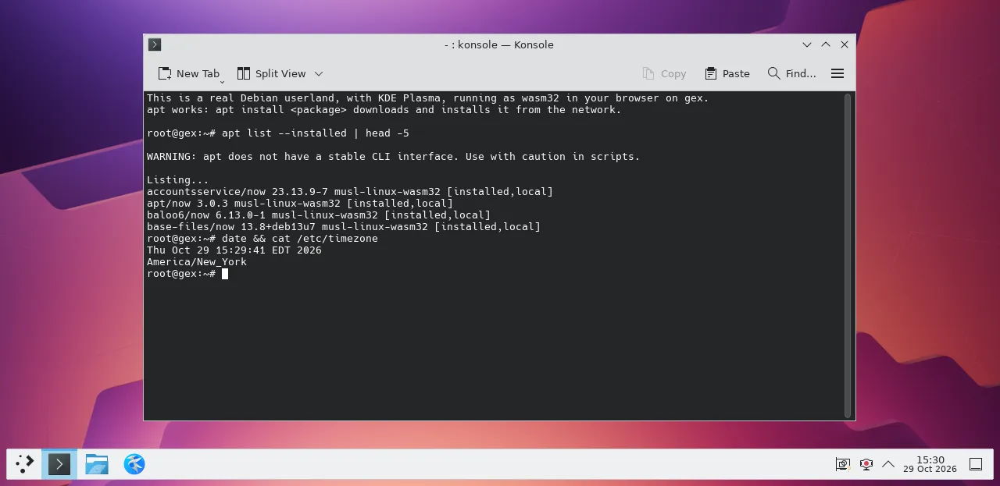

A whole desktop, in this tab
The KDE Plasma desktop, running in your browser
A real Debian userland with KDE Plasma, compiled to WebAssembly and run by gex, right here in the page. Nothing to install and no server doing the work: it runs on your machine.
- Konsole, Dolphin and Kate, with KWin drawing the windows
- apt works:
apt update, thenapt install <package>from Konsole - One download of about 200 MB, then it starts in about a minute
Best in a desktop browser with plenty of memory.
Startup log
Konsole on the Plasma desktop
